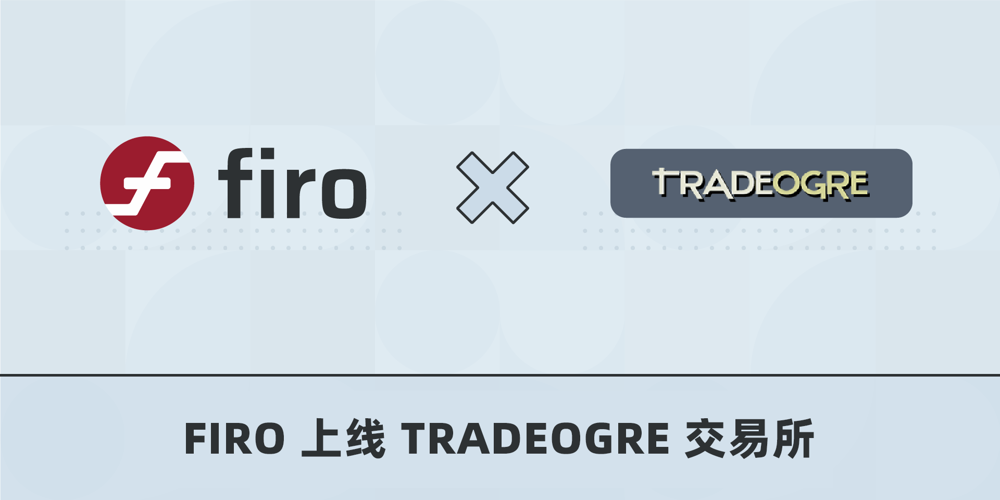

Firo 上线 TradeOgre 交易所

在我们社区推广工作的努力下，TradeOrge 开始支持 FIRO/BTC 交易对，这是一个中心化的币币交易所，主打隐私币种。
对于那些寻求保护自己隐私的人来说，TradeOgre 特别受欢迎，只需要提供邮箱地址即可注册，此外 TradeOgre 自 2018 年，也一直以匿名团队的形式运作。
非常感谢所有向 TradeOgre 请愿支持 Firo 交易对的社区成员，同时很高兴加入 TradeOgre 的隐私币种行列。
Firo 是一个社区项目，由社区拥有，因此项目的成功也离不开我们每一个人的努力。我们上线的许多交易所，包括最突出的币安，都是社区的共同努力，表明 Firofam 社区的集体声音是多么强大。我们非常鼓励社区成员向更多交易所请愿，无论是在社交媒体，还是发电子邮件或发消息！